These tables are from the book Core JavaServer
Faces by David Geary and Cay Horstmann.
Table 4–1 JSF Core Tags
Table 4–3 JSF HTML Tags
Table 4–4 Basic Attributes
| Attribute |
Component Types |
Description |
| id |
A (25) |
Identifier for a component |
| binding |
A (25) |
Reference to the component that can be used in a backing bean |
| rendered |
A (25) |
A boolean; false suppresses rendering |
| styleClass |
A (23) |
Cascading stylesheet (CSS) class name |
| value |
I, O, C (19) |
A component’s value, typically a value binding |
| valueChangeListener |
I (11) |
A method binding to a method that responds to value changes |
| converter |
I, O (15) |
Converter class name |
| validator |
I (11) |
Class name of a validator that’s created and attached to a
component |
| required |
I (11) |
A boolean; if true, requires a value to be entered in the associated
field |
A = all, I = input, O = output, C = commands, (n) = number of tags with
attribute
Table 4–5 HTML 4.0 Pass-through Attributes
| Attribute |
Description |
| accesskey (14) |
A key, typically combined with a system-defined metakey, that gives
focus to an element |
| accept (1) |
Comma-separated list of content types for a form |
| accept-charset (1) |
Comma- or space-separated list of character encodings for a form. The
accept-charset attribute is specified with the JSF HTML
attribute named acceptcharset. |
| alt (4) |
Alternative text for nontextual elements such as images or
applets |
| border (4) |
Pixel value for an element’s border width |
| charset (3) |
Character encoding for a linked resource |
| coords (2) |
Coordinates for an element whose shape is a rectangle, circle, or
polygon |
| dir (18) |
Direction for text. Valid values are ltr (left to right) and
rtl (right to left). |
| disabled (11) |
Disabled state of an input element or button |
| hreflang (2) |
Base language of a resource specified with the href
attribute; hreflang may only be used with href. |
| lang (20) |
Base language of an element’s attributes and text |
| maxlength (2) |
Maximum number of characters for text fields |
| readonly (11) |
Read-only state of an input field; text can be selected in a readonly
field but not edited |
| rel (2) |
Relationship between the current document and a link specified with
the href attribute |
| rev (2) |
Reverse link from the anchor specified with href to the
current document. The value of the attribute is a space-separated list
of link types. |
| rows (1) |
Number of visible rows in a text area. h:dataTable has a
rows attribute, but it’s not an HTML pass-through
attribute. |
| shape (2) |
Shape of a region. Valid values: default, rect,
circle, poly. (default signifies the entire
region) |
| size (4) |
Size of an input field |
| style (23) |
Inline style information |
| tabindex (14) |
Numerical value specifying a tab index |
| target (3) |
The name of a frame in which a document is opened |
| title (22) |
A title, used for accessibility, that describes an element. Visual
browsers typically create tooltips for the title’s value |
| type (4) |
Type of a link; for example, "stylesheet" |
| width (3) |
Width of an element |
(n) = number of tags with attribute
Table 4–6 DHTML Event Attributes
| Attribute |
Description |
| onblur (14) |
Element loses focus |
| onchange (11) |
Element’s value changes |
| onclick (17) |
Mouse button is clicked over the element |
| ondblclick (18) |
Mouse button is double-clicked over the element |
| onfocus (14) |
Element receives focus |
| onkeydown (18) |
Key is pressed |
| onkeypress (18) |
Key is pressed and subsequently released |
| onkeyup (18) |
Key is released |
| onmousedown (18) |
Mouse button is pressed over the element |
| onmousemove (18) |
Mouse moves over the element |
| onmouseout (18) |
Mouse leaves the element’s area |
| onmouseover (18) |
Mouse moves onto an element |
| onmouseup (18) |
Mouse button is released |
| onreset (1) |
Form is reset |
| onselect (11) |
Text is selected in an input field |
| onsubmit (1) |
Form is submitted |
(n) = number of tags with attribute
Table 4–7 Attributes for h:form
| Attribute |
Description |
| binding, id, rendered,
styleClass |
Basic attributes |
| accept, acceptcharset, dir,
enctype, lang, style, target,
title |
HTML 4.0 attributes |
| onblur, onchange, onclick,
ondblclick, onfocus, onkeydown,
onkeypress, onkeyup, onmousedown,
onmousemove, onmouseout, onmouseover,
onreset, onsubmit |
DHTML events |
Table 4–8 Attributes for
h:inputText, h:inputSecret,
h:inputTextarea,and h:inputHidden
| Attribute |
Description |
| cols |
For h:inputTextarea only—number of columns |
| immediate |
Process validation early in the life cycle |
| redisplay |
For h:inputSecret only—when true, the input
field’s value is redisplayed when the web page is reloaded |
| required |
Require input in the component when the form is submitted |
| rows |
For h:inputTextarea only—number of rows |
| valueChangeListener |
A specified listener that’s notified of value changes |
| binding, converter, id, rendered,
required, styleClass, value,
validator |
Basic attributes |
| accesskey, alt, dir, disabled,
lang, maxlength, readonly, size,
style, tabindex, title |
HTML 4.0 pass-through
attributes—alt, maxlength, and
size do not apply to h:inputTextarea. None apply to
h:inputHidden. |
| onblur, onchange, onclick,
ondblclick, onfocus, onkeydown,
onkeypress, onkeyup, onmousedown,
onmousemove, onmouseout, onmouseover,
onselect |
DHTML events. None apply to
h:inputHidden. |
Table 4–9 h:inputText and
h:inputSecret Examples
| Example |
Result |
| <h:inputText value="#{form.testString}"
readonly="true"/> |
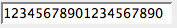 |
| <h:inputSecret value="#{form.passwd}"
redisplay="true"/> |
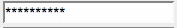 |
| <h:inputSecret value="#{form.passwd}"
redisplay="false"/> |
|
| <h:inputText value="inputText" style="color: Yellow;
background: Teal;"/> |
|
| <h:inputText value="1234567" size="5"/> |
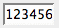 |
| <h:inputText value="1234567890" maxlength="6"
size="10"/> |
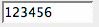 |
Table 4–10 h:inputTextarea
Examples
| Example |
Result |
| <h:inputTextarea rows="5"/> |
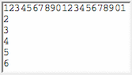 |
| <h:inputTextarea cols="5"/> |
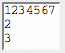 |
| <h:inputTextarea value="123456789012345" rows="3"
cols="10"/> |
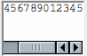 |
| <h:inputTextarea value="#{form.dataInRows}" rows="2"
cols="15"/> |
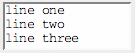 |
Table 4–11 Attributes for h:outputText
and h:outputFormat
| Attribute |
Description |
| escape |
If set to true, escapes <, >, and & characters. Default
value is true. |
| binding, converter, id, rendered,
styleClass, value |
Basic attributes |
| style, title |
HTML 4.0 |
Attributes for h:outputLabel
| Attribute |
Description |
| for |
The ID of the component to be labeled. |
| binding, converter, id, rendered,
value |
Basic attributes |
Table 4–12 Attributes for
h:graphicImage
| Attribute |
Description |
| binding, id, rendered,
styleClass, value |
Basic attributes |
| alt, dir, height, ismap,
lang, longdesc, style, title,
url, usemap, width |
HTML 4.0 |
| onblur, onchange, onclick,
ondblclick, onfocus, onkeydown,
onkeypress, onkeyup, onmousedown,
onmousemove, onmouseout, onmouseover,
onmouseup |
DHTML events |
Table 4–13 h:outputText and
h:graphicImage Examples
| Example |
Result |
| <h:outputText value="#{form.testString}"/> |
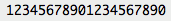 |
| <h:outputText value="Number #{form.number}"/> |
|
| <h:outputText value="<input type=’text’
value=’hello’/>"/> |
|
| <h:outputText escape="true" value="<input
type=’text’ value=’hello’/>"/> |
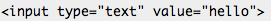 |
| <h:graphicImage value="/tjefferson.jpg"/> |
|
| <h:graphicImage value="/tjefferson.jpg" style="border: thin
solid black"/> |
|
Table 4–14 h:commandButton
and h:commandLink
| Attribute |
Description |
| action |
If specified as a string: Directly specifies an outcome used by the
navigation handler to determine the JSF page to load next as a result
of activating the button or link If specified as a method binding: The
method has this signature: String methodName(); the string
represents the outcome |
| actionListener |
A method binding that refers to a method with this signature:
void methodName(ActionEvent) |
| charset |
For h:commandLink only—The character encoding of the
linked reference |
| image |
For h:commandButton only—A context-relative path to an
image displayed in a button. If you specify this attribute, the HTML
input’s type will be image. |
| immediate |
A boolean. If false (the default), actions and action listeners are
invoked at the end of the request life cycle; if true, actions and
action listeners are invoked at the beginning of the life cycle. See
Chapter 6 for more information about the immediate
attribute. |
| type |
For h:commandButton: The type of the generated input
element: button, submit, or reset. The default, unless you specify the
image attribute, is submit. For h:commandLink: The content
type of the linked resource; for example, text/html, image/gif, or
audio/basic |
| value |
The label displayed by the button or link. You can specify a string
or a value reference expression. |
| accesskey, alt, binding, id,
lang, rendered, styleClass,
value |
Basic attributes |
| coords (h:commandLink only), dir,
disabled (h:commandButton only), hreflang
(h:commandLink only), lang, readonly,
rel (h:commandLink only), rev
(h:commandLink only), shape (h:commandLink
only), style, tabindex, target
(h:commandLink only), title, type |
HTML 4.0 |
| onblur, onchange, onclick,
ondblclick, onfocus, onkeydown,
onkeypress, onkeyup, onmousedown,
onmousemove, onmouseout, onmouseover,
onmouseup, onselect |
DHTML events |
Table 4–15 h:commandButton
Examples
|
Example
|
Result |
| <h:commandButton value="submit" type="submit"/> |
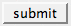 |
| <h:commandButton value="reset" type="reset"/> |
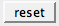 |
| <h:commandButton value="click this button..."
onclick="alert('button clicked')" type="button"/> |
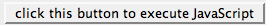 |
| <h:commandButton value="disabled" disabled="#{not
form.buttonEnabled}"/> |
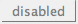 |
| <h:commandButton value="#{form.buttonText}"
type="reset"/> |
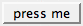 |
Table 4–16 h:commandLink
Examples
| Example |
Result |
| <h:commandLink> <h:outputText value="register"/>
</h:commandLink> |
|
| <h:commandLink style="font-style: italic"> <h:outputText
value="#{msgs.linkText}"/> </h:commandLink> |
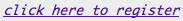 |
| <h:commandLink> <h:outputText
value="#{msgs.linkText}"/> <h:graphicImage
value="/registration.jpg"/> </h:commandLink> |
|
| <h:commandLink value="welcome"
actionListener="#{form.useLinkValue}"
action="#{form.followLink}"> |
|
| <h:commandLink> <h:outputText value="welcome"/>
<f:param name="outcome" value="welcome"/>
</h:commandLink> |
|
Table 4–17 Attributes for
h:outputLink
| Attribute |
Description |
| accesskey, binding, converter,
id, lang, rendered, styleClass,
value |
Basic attributes |
| charset, coords, dir, hreflang,
lang, rel, rev, shape,
style, tabindex, target, title,
type |
HTML 4.0 |
| onblur, onchange, onclick,
ondblclick, onfocus, onkeydown,
onkeypress, onkeyup, onmousedown,
onmousemove, onmouseout, onmouseover,
onmouseup |
DHTML events |
Table 4–18 h:outputLink
Examples
| Example |
Result |
| <h:outputLink value="http://java.net"> <h:graphicImage
value="java-dot-net.jpg"/> <h:outputText value="java.net"/>
</h:outputLink> |
|
| <h:outputLink value="#{form.welcomeURL}"> <h:outputText
value="#{form.welcomeLinkText}"/> </h:outputLink> |
|
| <h:outputLink value="#introduction"> <h:outputText
value="Introduction" style="font-style: italic"/>
</h:outputLink> |
|
| <h:outputLink value="#conclusion" title="Go to the
conclusion"> <h:outputText value="Conclusion"/>
</h:outputLink> |
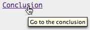 |
| <h:outputLink value="#toc" title="Go to the table of
contents"> <f:verbatim> <h2>Table of Contents</h2>
</f:verbatim> </h:outputLink> |
|
Table 4–19 Selection Tag Examples
| Tag |
Generated HTML |
Examples |
| h:selectBooleanCheckbox |
<input type="checkbox"> |
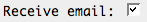 |
| h:selectManyCheckbox |
<table> ... <label> <input type="checkbox"/>
</label> ... </table> |
|
| h:selectOneRadio |
<table> ... <label> <input type="radio"/>
</label> ... </table> |
|
| h:selectOneListbox |
<select> <option value="Cheese"> Cheese
</option> ... </select> |
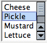 |
| h:selectManyListbox |
<select multiple> <option value="Cheese"> Cheese
</option> ... </select> |
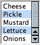 |
| h:selectOneMenu |
<select size="1"> <option value="Cheese"> Cheese
</option> ... </select> |
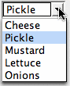 |
| h:selectManyMenu |
<select multiple size="1"> <option value="Sunday">
Sunday </option> ... </select> |
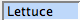 |
Table 4–20 Attributes for
h:selectBooleanCheckbox, h:selectManyCheckbox,
h:selectOneRadio, h:selectOneListbox,
h:selectManyListbox, h:selectOneMenu,
h:selectManyMenu
| Attribute |
Description |
| disabledClass |
CSS class for disabled elements—for h:selectOneRadio
and h:selectManyCheckbox only |
| enabledClass |
CSS class for enabled elements—for h:selectOneRadio
and h:selectManyCheckbox only |
| layout |
Specification for how elements are laid out: lineDirection
(horizontal) or pageDirection (vertical)—for
h:selectOneRadio and h:selectManyCheckbox only |
| binding, converter, id,
immediate, styleClass, required,
rendered, validator, value,
valueChangeListener |
Basic attributes |
| accesskey, border, dir, disabled,
lang, readonly, style, size,
tabindex, title |
HTML 4.0—border is applicable
to h:selectOneRadio and h:selectManyCheckbox only.
size is applicable to h:selectOneListbox and
h:selectManyListbox only. |
| onblur, onchange, onclick,
ondblclick, onfocus, onkeydown,
onkeypress, onkeyup, onmousedown,
onmousemove, onmouseout, onmouseover,
onmouseup, onselect |
DHTML events |
Table 4–21 Attributes for
f:selectItem
| Attribute |
Description |
binding, id |
Basic attributes |
| itemDescription |
Description used by tools only |
| itemDisabled |
Boolean value that sets the item’s disabled property |
| itemLabel |
Text shown by the item |
| itemValue |
Item’s value, which is passed to the server as a request
parameter |
| value |
Value binding expression that points to a SelectItem
instance |
Attributes for f:selectItems
| Attribute |
Description |
binding, id |
Basic attributes |
| value |
Value binding expression that points to a SelectItem, an
array or Collection of SelectItem objects, or a
Map mapping labels to values. |
Table 4–22 Attributes for
h:message and h:messages
| Attribute |
Description |
| for |
The ID of the component whose message is displayed—applicable
only to h:message |
| errorClass |
CSS class applied to error messages |
| errorStyle |
CSS style applied to error messages |
| fatalClass |
CSS class applied to fatal messages |
| fatalStyle |
CSS style applied to fatal messages |
| globalOnly |
Instruction to display only global messages—applicable only to
h:messages. Default: false |
| infoClass |
CSS class applied to information messages |
| infoStyle |
CSS style applied to information messages |
| layout |
Specification for message layout: table or list—applicable only
to h:messages |
| showDetail |
A boolean that determines whether message details are shown. Defaults
are false for h:messages, true for h:message. |
| showSummary |
A boolean that determines whether message summaries are shown.
Defaults are true for h:messages, false for
h:message. |
| tooltip |
A boolean that determines whether message details are rendered in a
tooltip; the tooltip is only rendered if showDetail and
showSummary are true |
| warnClass |
CSS class for warning messages |
| warnStyle |
CSS style for warning messages |
| binding, id, rendered,
styleClass |
Basic attributes |
| style, title |
HTML 4.0 |
Table 4–23 Attributes for
h:panelGrid
| Attribute |
Description |
| bgcolor |
Background color for the table |
| border |
Width of the table’s border |
| cellpadding |
Padding around table cells |
| cellspacing |
Spacing between table cells |
| columnClasses |
Comma-separated list of CSS classes for columns |
| columns |
Number of columns in the table |
| footerClass |
CSS class for the table footer |
| frame |
frame Specification for sides of the frame surrounding the table that
are to be drawn; valid values: none, above,
below, hsides, vsides, lhs,
rhs, box, border |
| headerClass |
CSS class for the table header |
| rowClasses |
Comma-separated list of CSS classes for columns |
| rules |
Specification for lines drawn between cells; valid values:
groups, rows, columns, all |
| summary |
Summary of the table’s purpose and structure used for
non-visual feedback such as speech |
| binding, id, rendered,
styleClass, value |
Basic attributes |
| dir, lang, style, title,
width |
HTML 4.0 |
| onclick, ondblclick, onkeydown,
onkeypress, onkeyup, onmousedown,
onmousemove, onmouseout, onmouseover,
onmouseup |
DHTML events |
Table 4–24 Attributes for
h:panelGroup
Table 5–1 Attributes for
h:dataTable
| Attribute |
Description |
| bgcolor |
Background color for the table |
| border |
width of the table's border |
| cellpadding |
Padding around table cells |
| cellspacing |
Spacing between table cells |
| columnClasses |
comma-separated list of CSS classes for columns |
| first |
index of the first row shown in the table |
| footerClass |
CSS class for the table footer |
| frame |
Specification for sides of the frame surrounding the table should be
drawn; valid values: none, above, below,
hsides, vsides, lhs, rhs,
box, border |
| headerClass |
CSS class for the table header |
| rowClasses |
comma-separated list of CSS classes for rows
|
| rules |
Specification for lines drawn between cells; valid values:
groups, rows, columns, all |
| summary |
summary of the table's purpose and structure used for non-visual
feedback such as speech |
| var |
The name of the variable created by the data table that represents
the current item in the value |
| binding, id, rendered,
styleClass, value |
Basic attributes |
| dir, lang, style, title,
width |
HTML 4.0 |
| onclick, ondblclick, onkeydown,
onkeypress, onkeyup, onmousedown,
onmousemove, onmouseout, onmouseover,
onmouseup |
DHTML events |
Attributes for h:column
| Attribute |
Description |
| headerClass (JSF 1.2) |
CSS class for the column's header |
| footerClass (JSF 1.2) |
CSS class for the column's footer |
| binding, id, rendered |
Basic attributes |
Table 6–1 Attributes for
f:convertNumber
| Attribute |
Type |
Value |
| type |
String |
number (default), currency , or
percent |
| pattern |
String |
Formatting pattern, as defined in
java.text.DecimalFormat |
| maxFractionDigits |
int |
Maximum number of digits in the fractional part |
| minFractionDigits |
int |
Minimum number of digits in the fractional part |
| maxIntegerDigits |
int |
Maximum number of digits in the integer part |
| minIntegerDigits |
int |
Minimum number of digits in the integer part |
| integerOnly |
boolean |
True if only the integer part is parsed (default: false) |
| groupingUsed |
boolean |
True if grouping separators are used (default: true) |
| locale |
java.util.Locale |
Locale whose preferences are to be used for parsing and
formatting |
| currencyCode |
String |
ISO 4217 currency code to use when converting currency values |
| currencySymbol |
String |
Currency symbol to use when converting currency values |
Table 6–2 Attributes for
f:convertDateTime
| Attribute |
Type |
Value |
| type |
String |
date (default), time, or both |
| dateStyle |
String |
default, short, medium, long, or
full |
| timeStyle |
String |
default, short, medium, long, or
full |
| pattern |
String |
Formatting pattern, as defined in
java.text.SimpleDateFormat |
| locale |
java.util.Locale |
Locale whose preferences are to be used for parsing and
formatting |
| timeZone |
java.util.TimeZone |
Time zone to use for parsing and formatting |
Table 6–3 Standard Validators
| JSP Tag |
Validator Class |
Attributes |
Validates |
| f:validateDoubleRange |
DoubleRangeValidator |
minimum, maximum |
a double value within an optional range |
| f:validateLongRange |
LongRangeValidator |
minimum, maximum |
a long value within an optional range |
| f:validateLength |
LengthValidator |
minimum, maximum |
a String with a minimum and maximum number of characters |
Attributes for f:view
| Attribute |
Description |
| locale |
The locale for this view. |
| renderKitId (JSF 1.2) |
The render kit ID for this view |
| beforePhase, afterPhase |
Phase listeners that are called in every phase except "restore
view" |
Attributes for f:subview
Attributes for f:facet
| Attribute |
Description |
| name |
The name of this facet. |
Attributes for f:attribute
| Attribute |
Description |
| name |
The name of the attribute to set. |
| value |
The value of the attribute. |
Attributes for f:param
| Attribute |
Description |
| name |
An optional name for this parameter component. |
| value |
The value stored in this component. |
| binding, id |
Basic attributes |
Attributes for
f:actionListener, f:valueChangeListener
| Attribute |
Description |
| type |
The name of the listener class |
Attributes for
f:propertyChangeListener
| Attribute |
Description |
| target |
The bean property to set when the action event occurs |
value |
The value to set it to |
Attributes for f:converter
| Attribute |
Description |
| converterId |
The ID of the converter |
Attributes for f:validator
| Attribute |
Description |
| validatorId |
The ID of the validator |
Attributes for f:loadBundle
| Attribute |
Description |
| basename |
The resource bundle name |
| value |
The name of the variable that is bound to the bundle map |
Attributes for f:verbatim
| Attribute |
Description |
| escape |
If set to true, escapes <, >, and & characters. Default
value is false. |
| rendered (JSF 1.2) |
Basic attributes |